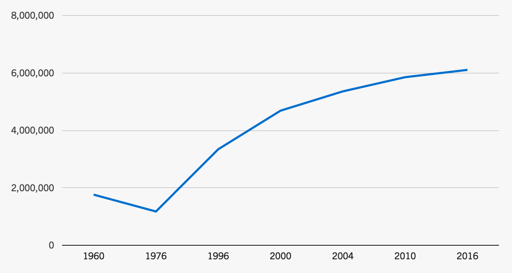

Let's get real.
The GOP Caused Trump.
Donald Trump
is not an aberration.
His campaign was built on a strategy of racial resentment, which the Republican* party has been using for over 50 years.
In the 1970s, conservatives joined hands with the billionaire class to link public institutions to “undeserving minorities.” This was an attempt to undo the country’s social contract by weakening the government's ability to protect against market-produced inequities.
After the civil rights movement opened up more government programs to people of color that were previously whites-only, the elite ruling class reacted. They saw that they could gain ground by “dog whistling” about welfare and criminals, using racially coded terms to frighten the white working and middle class about a progressive government coddling people of color. Donald Trump has taken this old dog whistle and turned it into a bullhorn.
This is not to say that the campaign's strategic racism is the only reason tens of millions of people voted to elect Donald Trump. Rather, the purpose is to show how the racist rhetoric he used throughout the campaign is an extension of a deliberate political strategy that has been used for decades.
Now more than ever, our country must reckon with and repair the wounds of our history. If we want to solve the crises of inequality, structural racism, climate change, and political gridlock, we can no longer avoid uncomfortable truths about the racism of our past and present.
This timeline is a work in process — if you see something that needs correcting or that you think should be added, please let us know here. It is indebted in particular to a few sources, most notably Dog Whistle Politics by Ian Haney López and Michelle Alexander's writing about mass incarceration.
January 1963
George Wallace inaugurated as Governor. Declares, “Segregation today, segregation tomorrow, segregation forever.”
George Wallace is one of the most famous segregationists of the 1960s. During his campaign he vowed to stand in schoolhouse doors to bar Black students from white schools. Six months after his inauguration, he did just that at the University of Alabama. He was not, however, always a rampant racist — he turned that way after losing the 1958 governor race. He later put it this way: “I started off talking about schools and highways and prisons and taxes, and I couldn’t make them listen. Then I began talking about N***ers, and they stomped the floor.”
Governor Wallace tries to stop integration at the University of Alabama
1964
Barry Goldwater runs for President
Barry Goldwater, the Republican candidate for President, ran on a platform that included his strong opposition to the Civil Rights Act of 1964. President Johnson had signed the legislation into law earlier that year, on the grounds that segregation was a “states’ rights issue.” Goldwater captured the majority of Deep South white voters for the Republican party, marking the beginning of the “Southern Strategy” as a national force.
Alabama, Georgia, Mississippi, and South Carolina switched to Red for the first time since Reconstruction. He lost handily, but it signaled a major shift in the Republican party.
The Southern Strategy
Lee Atwater, advisor and campaign manager to Presidents Reagan and Bush, summed up the Southern Strategy this way: “You start out in 1954 by saying, “N***er, n***er, n***er.” By 1968, you can’t say “n***er” — that hurts you. Backfires. So you say stuff like forced busing, states’ rights and all that stuff. You’re getting so abstract now, you’re talking about cutting taxes, and all these thing you’re talking about are totally economic things and a byproduct of them is, blacks get hurt worse than whites.”
While the name may make it sound like the Southern Strategy was limited to southern states, the reality is that the Southern Strategy has served as the backbone for the Republican party’s national strategy since the 1960s. Its hallmark is playing up racial antagonism — without explicitly talking about race — with the goal of making minorities, rather than concentrated wealth, the enemy of the white middle class.
Learn more about the Southern Strategy and listen to Atwater's full interview here.
“From now on, the Republicans are never going to get more than 10 to 20 percent of the Negro vote and they don't need any more than that… The more Negroes who register as Democrats in the South, the sooner the Negrophobe whites will quit the Democrats and become Republicans. That's where the votes are.”
~Kevin Phillips, political advisor for President Nixon, in the New York Times in 1971.
October 1968
Nixon moves far right on race, heavily using coded language
While Nixon’s main opponent in 1968 was Hubert Humphrey, Nixon was also flanked on the right by third-party George Wallace. Wallace was polling ahead of both Humphrey and Nixon in the South just a month before the election, and was siphoning votes from Nixon across the country. Nixon’s response was to push two racialized appeals to the front of his campaign: opposing “forced busing” and enforcing “law and order.”
“LAW AND ORDER” was one of the rhetorical frames used in resistance to civil rights, painting activists as lawbreakers and criminals — with the goal of shifting the conversation away from white supremacy and toward a neutral-sounding concern for “order.” Similar language is still used regularly today to justify a defense of the status quo that discriminates against people of color.
“FORCED BUSING” was an incredibly potent euphemism for the system of transporting students across the boundaries of segregated neighborhoods to integrate schools. The problem, of course, was not actually about buses. Mary Frances Berry explains, “African-American attempts to desegregate schools were confronted by white flight and complaints that the problem was not desegregation, but busing, oftentimes by people who sent their children to school everyday on buses, including mediocre white private academies established to avoid integration.”
1969
Nixon creates the phrase, "the silent majority"
In 1969, Nixon coined the term, "the silent majority" to delegitimize vocal opponents of the Vietnam war. Nixon claimed to represent the interests of the "majority" — specifically a white majority. In the years since, the term, “the vocal minority” has been used as a way to deligitimize expressions of outrage by black civil rights workers, feminists, defenders of LGBTQI rights, and other groups seeking to bring about change. During the 2016 campaign, President-elect Trump repeated the phrase multiple times.
"It was the most effective speech of Nixon's Presidency"
1971
Soon-to-be Supreme Court Justice Lewis Powell writes the Powell Memo
The Powell memo was based around a 4 point plan to organize and entrench corporate power. This plan was implemented by and large, and the ramifications over the past 40 years have been disastrous for people of color, poor people, and women. Some of the most widely-known effects were the founding of the ultra-conservative Heritage Foundation think tank, the creation of conservative TV and radio news networks, and the founding of the American Legislative Exchange Council, better known as ALEC.
1971
The Controlled Substances Act is passed, and War on Drugs declared
The Controlled Substances Act, passed in 1970, introduced the still-standing model of drug scheduling, and made drugs like cocaine, heroine, and marijuana illegal. At the same time, he declared the first "war on drugs," expanded drug enforcement agencies, created mandatory sentencing and introduced no-knock warrants — allowing law enforcement to enter a property without “immediate” warning. They’re intended to be used in the most dangerous of searches, but, today, somewhere around 20,000 such raids occur each year. The majority of charges are related to drug crimes, and the majority of those defendants are black.
In many ways, however, Nixon's war on drugs is mild compared to how drastically it expanded during the Reagan administration. In 1982, President Reagan expanded the war drastically, making it in the words of Michelle Alexander, "a literal war."
1973
The American Legislative Exchange Council (ALEC) is formed
The Conservative Caucus of State Legislators formed a nonprofit lobbying committee to create standardized state-level legislation to serve the conservative platform. ALEC has produced and pushed for model bills on a broad range of issues at the state level, including: reducing corporate taxation, lowering taxes on the super wealthy, increasing barriers to immigration, weakening and abolishing environmental regulations, tightening voter identification rules, undermining labor unions and opposing background checks. These bills are almost all sponsored by corporations and taken up by conservative politicians. Many bills are copied word-for-word from ALEC's model bills.
Among ALEC's founders is Paul Weyrich, who also co-founded the Heritage Foundation and Moral Majority — and later spoke candidly about how the Republican party doesn't want everyone to vote.
ALEC's modern impact on politics
1979
Supreme Court adopts malice standard for racism
In 1979, the Supreme Court adopted a “racism as hate” model, requiring proof of explicit malice to prove something is racist. This bar has proven almost insurmountable, barring recorded or in-court uses of racial epithets. Since then, the court has never found discrimination against non-whites — even though just 15 years had passed since the Civil Rights Act was passed.
Conservatives advocate a “colorblind” approach to race
One of the first moves to prevent integration was pushing the idea that everyone should be color-blind. Among the first politicians to push for such an approach was Barry Goldwater. In the 1960s, shortly after Brown vs. Board of Ed, he argued that because the Constitution is color-blind, integration is just as bad as segregation.
It took years for such an approach to take hold. When a color-blind approach first reached the Supreme Court, it was summarily rejected because it was seen as an obvious attempt to avoid integration. President Nixon, however, appointed four new justices to the Supreme Court during his tenure, paving the way for a color-blind approach to become law. This ultimately set the precedent that racism is exclusively individual, rather than structural. The result was a systematic dismantling of all government programs that sought to address any of the harms of slavery or Jim Crow — just 15 years after the Civil Rights Act.
A major part of the pretense of color-blindness was shifting toward discussing ethnicity rather than race. People could pretend their racism was merely about cultural difference — something “acceptable” to talk about.
1980
Ronald Reagan is elected President using many of the same strategies as Wallace and Goldwater
Unlike Wallace and Nixon, Reagan was not a moderate, but an old-time Goldwater conservative with his own intuitive grasp of the power of racial provocation. For Reagan, conservatism and racial resentment were inextricably fused.
After securing the Republican nomination in 1980, Reagan launched his official campaign at a county fair just outside Philadelphia, Mississippi, the town still notorious for the Klan lynching of three civil rights volunteers just 16 years earlier. Reagan selected the location on the advice of a local official, who had written to the Republican National Committee assuring them that it was an ideal place for winning “George Wallace-inclined voters.” The candidate arrived to a raucous crowd of 10,000 white people and he assured them, “I believe in states’ rights.”
In 1984, Reagan came back, this time to endorse the neo-Confederate slogan “the South shall rise again.” As New York Times columnist Bob Herbert concludes, “Reagan may have been blessed with a Hollywood smile and an avuncular delivery, but he was elbow deep in the same old race-baiting Southern strategy of Goldwater and Nixon.”
“I don’t want everybody to vote."
1981
GOP blatantly suppresses voters of color in New Jersey's gubernatorial race
In 1981, the Republican National Committee (RNC) joined with state Republican committees to ostensibly address voter fraud, but actually to suppress Democrat voter turnout. It targeted communities of color across the country. In New Jersey, after a mailing campaign to intimidate Black and Latinx voters armed, off-duty police officers were sent to the polls on Election Day in neighborhoods largely populated by people of color. These officers wore armbands labeled “National Ballot Security Task Force" and stood near signs warning people about the task force’s patrol. It led to the Republican governor winning the race. However, the DNC sued the RNC -- and won -- for blatant discriminatory voter suppression. This was not the first instance of such suppression, but served as a harbinger for an expansion of such tactics in following years.
Reagan's War on Drugs: "little to do with genuine concern about addiction, and everything to do with racial politics."
Felon Disenfranchisement surges — disproportionately affecting people of color
Currently, 6.1 million people are prohibited from voting due to felon disenfranchisement — 2.2 million of them are black citizens. Read more at The Sentencing Project
President Reagan massively cuts Welfare
When Lyndon B. Johnson declared his War on Poverty, he extended the benefits of social welfare to non-whites. Poverty in nonwhite communities was deeply tied to segregation, and hostility toward integration morphed into opposition to welfare. “The positive liberties [that the War on Poverty] extended to African Americans,” notes Jill Quadagno, a scholar of race and welfare, “were viewed by the working class as infringement on their negative liberties, the liberty...to discriminate… to exclude minorities...” Though the dismantling of social welfare started with Nixon, Reagan took it much further, justifying it in part by intimately linking the image of welfare receipients to race.
Reagan repeatedly invoked a story of a “Chicago welfare queen” with “eighty names, thirty addresses, [and] twelve Social Security cards [who] is collecting veteran’s benefits on four non-existing deceased husbands. She’s got Medicaid, getting food stamps, and she is collecting welfare under each of her names. Her tax-free cash income is over $150,000.” The other image he invoked was "some young fellow ahead of you to buy a T-bone steak while you were waiting in line to buy a hamburger." Both images were designed to conjure the image of black welfare recipients who were exploiting the system.
Conversely, Reagan implied that white people were the workers, the tax payers, people playing by the rules and struggling to make ends meet while people of color partied with their hard-earned tax dollars. The opposition to welfare was two-fold — first, preventing transfer of resources to an, "undeserving poor," who were pdisproportionally people of color, and second to reduce government meddling particularly in states' business, which was itself a fire stoked around opposition to integration.
Affirmative Action demonized as a racist policy
Affirmative action emerged in the late 60s as part of an attempt to foster integration in schools and workplaces. While it was always te object of some resentment, it had broad support until the 1980s when President Reagan appointed an outspoken critic of affirmative action to head the Civil Rights Division of the DOJ.
By the time Reagan won re-election in 1984, the GOP's position on affirmative action was, "We will resist efforts to replace equal rights with discriminatory quota systems and preferential treatment. Quotas are the most insidious form of discrimination: reverse discrimination against the innocent." Note that it doesn't say reverse discrimination against white people, but instead makes white people and innocent people synonymous. This message spoke particularly to well-off white people by hinting that their jobs and children's access to top colleges were at risk.
The Rise of Mass Incarceration
Phrases like, "law and order" and the "war on drugs" are coded ways to discuss denying rights to people based largely around race; they are terms deeply rooted in maintaining racial discrimination and apprehension. While this didn't begin in the 1980s, the system of mass incarceration massively expanded. The following is excerpted from The New Jim Crow by Michelle Alexander:
"What has changed since the collapse of Jim Crow has less to do with the basic structure of our society than with the language we use to justify it. In the era of colorblindness, it is no longer socially permissible to use race, explicitly, as a justification for discrimination, exclusion, and social contempt. So we don’t. Rather than rely on race, we use our criminal justice system to label people of color “criminals” and then engage in all the practices we supposedly left behind. Today it is perfectly legal to discriminate against criminals in nearly all the ways that it was once legal to discriminate against African Americans.
"Once you’re labeled a felon, the old forms of discrimination—employment discrimination, housing discrimination, denial of the right to vote, denial of educational opportunity, denial of food stamps and other public benefits, and exclusion from jury service—are suddenly legal. As a criminal, you have scarcely more rights, and arguably less respect, than a black man living in Alabama at the height of Jim Crow. We have not ended racial caste in America; we have merely redesigned it."
Read more about Mass Incarceration in The New Jim Crow by Michelle Alexander
1988
George H.W. Bush runs now-infamous racist Willie Horton ad — and surges in the polls
In 1988, President Bush was behind in the polls — until he listened to the advice of Lee Atwater and began running an advertisement based on a black man named Willie Horton, who was serving a life sentence for murder. The ad nnarrated the case with his mug shot on screen and flashing words like, “kidnapping,” “stabbing,” and “raping” on the screen — before concluding with, “Weekend prison passes: Dukakis on crime.” The ad didn't talk directly about race; instead it used Horton’s image and the apprehension around law and order that had been built since the Nixon campaign. The ad allowed the Bush campaign could benefit from stoking racialized fears and antagonism without directly talking about race.
"The Revolving Door" campaign ad
1994
Violent Crime Control Act signed by Bill Clinton
While much of the history of dog whistle politics revolves around the Republican party, in the 1990s Democrats under Bill Clinton adopted much of the same language — particularly around law and order. The Violent Crime Act, signed by President Clinton, was the largest crime bill in history of country. It provided for 100,000 new police officers, $9.7 billion in funding for prisons, and significantly expands government’s ability to deal with “criminal aliens.” Beyond that, it authorizes adult prosecution of those 13 years and older charged with violent crimes, implements three strikes policy, mandatory minimum sentences, and expanded the federal death penalty.
1996
Rupert Murdoch founds Fox News
In 1996, media magnate Rupert Murdoch launched Fox News, a conservative news network designed to put forward the news with as conservative a slant as possible. At the helm was Roger Ailes, the man responsible for Richard Nixon’s media strategy. Unsurprisingly, Fox has since engaged in incessant racially charged attacks, recycling the coded language that stoked the same racial resentments that the Republican party had mobilized since the Southern Strategy.
It's worth noting that Fox News is not the first conservative television news network. Within a couple of years of the Powell memo, Joseph Coors (the ultra-conservative head of Coors beer) created a television network called Television News Incorporated. And just like with Fox News, Roger Ailes was on board, serving as the network’s news director.
2009
The Tea Party forms
The Tea Party began with in 2009 with a rant on the floor of the Chicago Mercantile Exchange by obscure CNBC correspondent Rick Santelli, calling all capitalists to show up and start organizing — and in particulary, to show up around the country on tax day. The burgeoning populist movement was given a huge amount of institutional support by Fox News, the Koch brothers, and many GOP officials.
The ideology of the Tea Party Movement was centered around four things: 1. Demonization of welfare, and the belief that government payouts to the “losers” come at the expense of the hardworking, 2. Hatred of undocumented immigrants as freeloaders 3. Fear of Arab Muslims, and the stereotyping of them as terrorists 4. Overt hatred of Barack Obama — accompanied in varying amounts by the belief that he is not actually a citizen.
Tea Party activists fervently denied they were racist, but the demographics of the movement also made it clear that their message resonanted far more strongly with white people than anyone else. The Tea Party positioned themselves as racial victims, claiming that their ideology was based on fairness and common-sense economic policies. Tea Party rhetoric was steeped in racial stereotypes, especially about immigrants, Muslims, and Obama, and they mobilized the anger and fear of everyday white conservatives. The Republican Party, trying to find a new label for their damaged brand, propped up an emerging grassroots movement in order to re-energize the GOP.
Fox news advertises the Tea Party events
2010
Arizona "Support Our Law Enforcement and Safe Neighborhoods" Act is passed
When SB 1070 was passed, it was by far the broadest and strictest anti-illegal immigration measure in decades. It requires all aliens over the age of 14 who remain in the United States for longer than 30 days[5] to register with the U.S. government, to have registration documents in their possession at all times, and required that state law enforcement officers attempt to determine an individual's immigration status during a "lawful stop, detention or arrest." Ultimately, though some of the law was struck down by the Supreme Court, it upheld the most disputed part: requiring police to determine the immigration status of someone arrested or detained when there is “reasonable suspicion” they are not in the U.S. legally.
2010
Republicans pass voting restrictions in states across the South
After Republicans swept into control of a huge number of state legislatures in 2010, they passed laws to restrict voting at the state level. Eight states passed laws to restrict voting between 2010 and 2012, all disproportionately affecting people of color. In particular, they passed laws that cut early voting, eliminated same-day voter registration, created voting challenges that could be made by one’s fellow citizens, and required photo identification for voting.
"There's a deliberate and systematic attempt to prevent millions of elderly voters, young voters, students, minority and low-income voters from exercising their constitutional right to engage in the democratic process."
~ Civil Rights Leader and US Representative John Lewis
Republican Political Ad calls on Latinx people to not vote
"My job is not to worry about those people."
2013
The Supreme Court strikes down key pieces of the Voting Rights Act
The Voting Rights Act was passed in 1965 to ensure state and local governments do not pass laws or policies that deny American citizens the equal right to vote based on race. In 2013, the Supreme Court struck down portions of the law, arguing the formula it used was based on old data. Since then, Congress has refused to pass a new formula, rendering much of the Voting Rights Act inoperable — clearing the way for states to pass restrictive voter laws that would previously have been illegal, including voter ID laws.